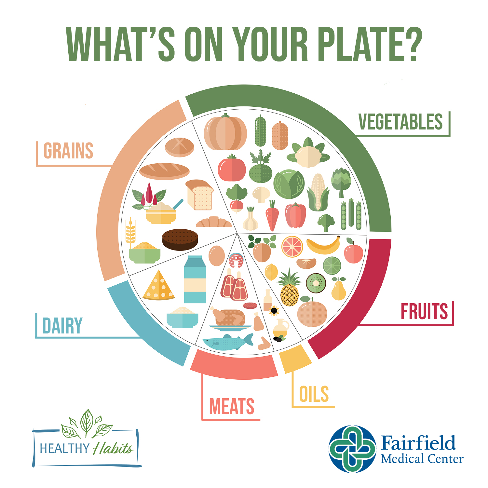

What is healthy lifestyle
A healthy lifestyle is a way of living that helps you maintain physical, mental, and emotional well-being. It involves a series of habits and choices that contribute to long-term health and vitality.
Nutrition
Proper nutrition helps keep energy levels up and protects against many age-related illnesses and diseases like heart disease, cancer, and diabetes. Good nutrition helps fuel your body. The foods you eat supply the nutrients your body needs to maintain your brain, muscle, bone, nerves, skin, blood circulation, and immune system. Proper nutrition also helps protect you from illness and disease, such as heart disease, diabetes, cancer, and osteoporosis.

Exercise
Exercising regularly, every day if possible, is the single most important thing you can do for your health. In the short term, exercise helps to control appetite, boost mood, and improve sleep. In the long term, it reduces the risk of heart disease, stroke, diabetes, dementia, depression, and many cancers. A smartly designed exercise program will benefit your body and mind in innumerable ways.
The benefits of exercise on mental health are well documented. For example, one major study found that sedentary people are 44% more likely to be depressed.
Sleep
Sleep is an essential and involuntary process, without which we cannot function effectively. It is as essential to our bodies as eating, drinking and breathing, and is vital for maintaining good mental and physical health. Sleeping helps to repair and restore our brains, not just our bodies. Sleep is vital for memory consolidation as well as supporting normal immune function and healing after injury or disease. There is also a growing body of evidence that sleep helps the brain to clear cellular and protein debris that can otherwise build up and cause damage, leading to inflammation and cell death.

Health Tips
- Drink 6-8 glasses of water daily
- Exercise 30 minutes daily
- Stretch daily
- Limit sugar and salt intake
- Include fruits and vegetables of different colors to maximize nutrients
- Include healthy fats like avocados
Daily Calorie Intake Recommendations
| Age group |
Women |
Men |
| 1-3 years |
1,000 kcal |
1,000 kcal |
| 4-8 years |
1,200-1,400 kcal |
1,400-1,600 kcal |
| 9-13 years |
1,600-2,000 kcal |
1,800-2,200 kcal |
| 14-18 years |
1,800-2,400 kcal |
2,200-3,200 kcal |
| 19-30 years |
2,000-2,400 kcal |
2,400-3,000 kcal |
| 31-50 years |
1,800-2,200 kcal |
2,200-3,000 kcal |
| 51+ years |
1,600-2,000 kcal |
2,000-2,600 kcal |
Sign Up for Health Newsletter